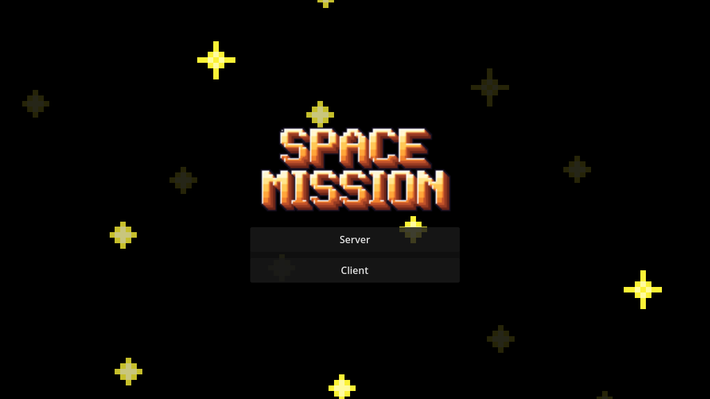
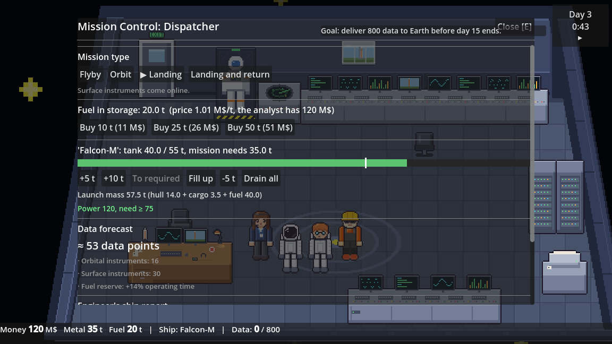
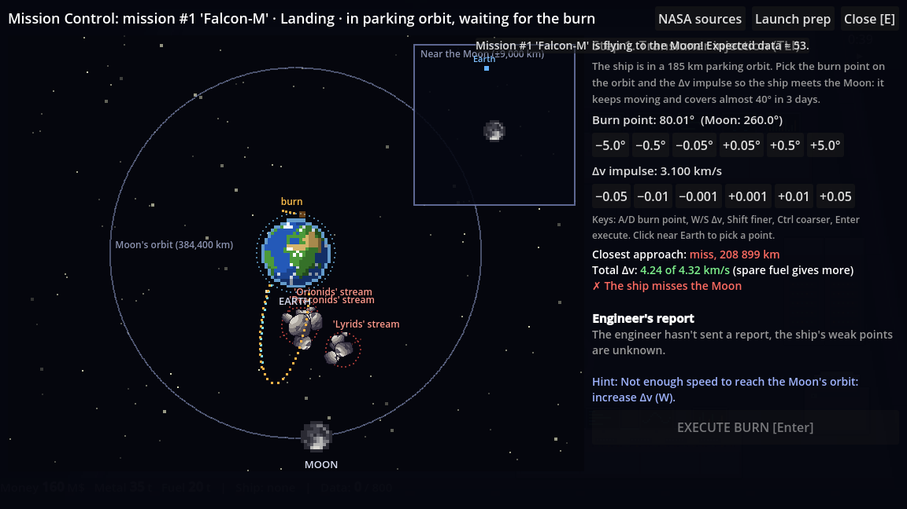
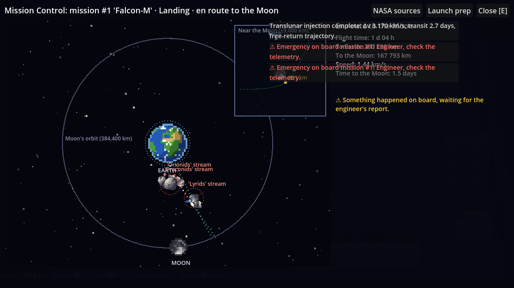
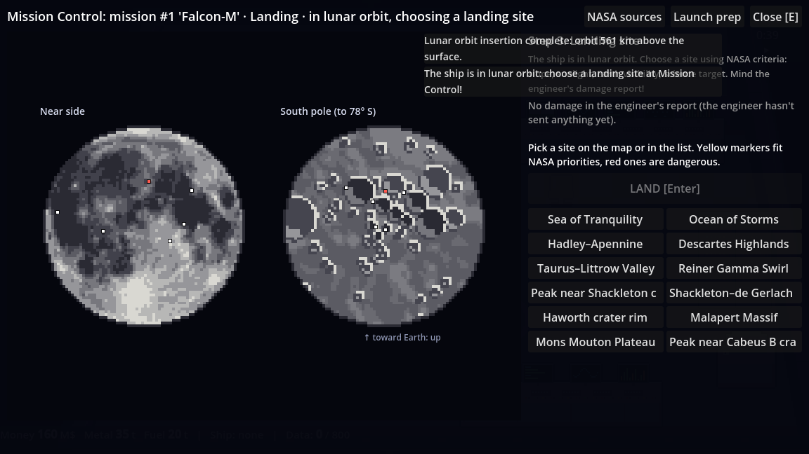

A co-op pixel-art game where four players run a lunar program together, from buying a rocket to choosing where to land on the Moon.

Real missions succeed because finance, engineering, crew and mission control work as one. We turned that into a game: every player has a job nobody else can do, and real NASA numbers decide whether the rocket flies.
Information is split on purpose: the engineer sees the failures, the dispatcher makes the decisions, so players have to talk.

Works out of the box: use the local address the host sees.
Join one virtual LAN: Radmin VPN, ZeroTier or Tailscale. No router setup: share the VPN address from the host's address list.
Forward UDP 42069 on the host's router. Needs a public IP from the provider.



Landing sites include Apollo 11–17, Reiner Gamma and the Artemis III south-pole regions. Each is rated by slope, sunlight and Earth visibility.